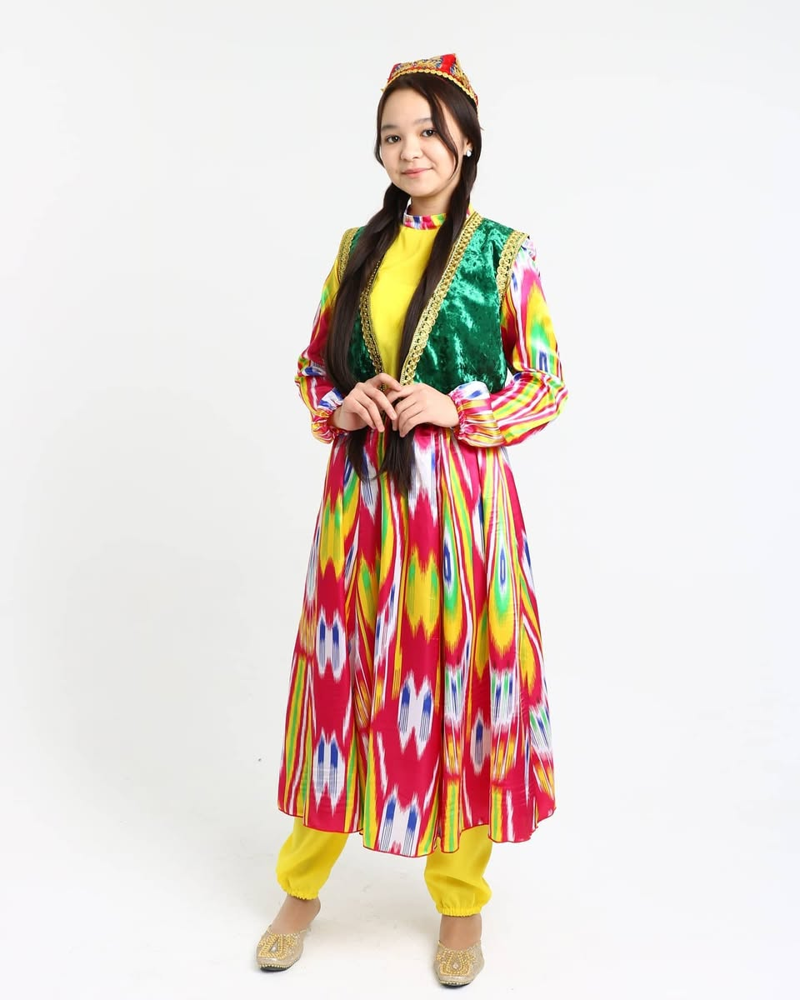

Национальные костюмы: История и Традиции
Национальная одежда – это отражение культуры и истории каждого народа. Она передавалась из поколения в поколение, сохраняя свою самобытность и уникальные элементы. Казахская национальная одежда создавалась из натуральных материалов, украшалась традиционными узорами и соответствовала образу жизни кочевого народа. Каждая деталь одежды имела свое значение: шапан – символ уважения, саукеле – украшение невесты, камзол – показатель женской элегантности. Национальные костюмы – это не просто элементы моды, но и отражение традиций и духовных ценностей народа.
Галерея национальных костюмов


История национальной одежды
Древний период
Костюмы кочевых народов
Средневековье
Период ханской эпохи
Советский период
Влияние социалистической культуры
Современность
Стилизация и возрождение традиций
×